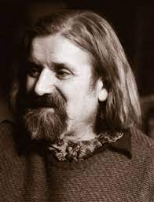
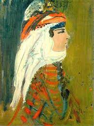

lkokulu İstanbul’da Ali Avni Çelebi ve Malik Aksel’in öğrencisi olarak bitirdikten sonra Galatasaray Lisesi’nde Cihat Burak ve Avni Arbaş’la tanıştı. Resim ile ciddi anlamda tanışması Malik Aksel’den aldığı resim dersleri ile oldu. Babasının da resme ilgi duyması ile birlikte, şu anda Mimar Sinan Güzel Sanatlar Üniversitesi olan İstanbul Güzel Sanatlar Akademisi Resim Bölümü’ne 1915 yılında girdi. Resim derslerini Nazmi Ziya Güran, Feyhaman Duran, Leopold Levy ve Zeki Kocamemi’den alan Turan, İsmail Hakkı Altunbezer, Necmettin Okyay ve Kamil Akdik’ten Türk süsleme sanatları ve hat dersi aldı. 1938 yılında Akadademi’den mezun olduktan sonra 1939 yılında resim öğretmeni olarak Üsküdar'daki ortaokullarda ve Moda Kız Sanat Okulu’nda çalıştı. Bir taraftan da Akademi’deki atölyelerde ve Topkapı Sarayı’nda Minyatür üzerine de çalışmalar yaptı. 1940 yılında açılan Yüksek Resim Bölümü’ne Nuri İyem, Turgut Atalay, Ferruh Başağa, Agop Arad, Avni Arbaş, Mümtaz Yener, Fethi Karakaş ve Haşmet Akal ile birlikte devam etti. Bir yıl sonra aralarına Abidin Dino’nun da katılımıyla "Toplumsal Gerçekçi" anlayış gözetilerek Yeniler Grubu’nun kurucuları arasında yer aldı. 1941 yılında Halkevleri aracılığıyla düzenlenen yurt gezilerine katılarak; bu gezilerin 10. yıl sergisinde birincilik ödülü aldı.
